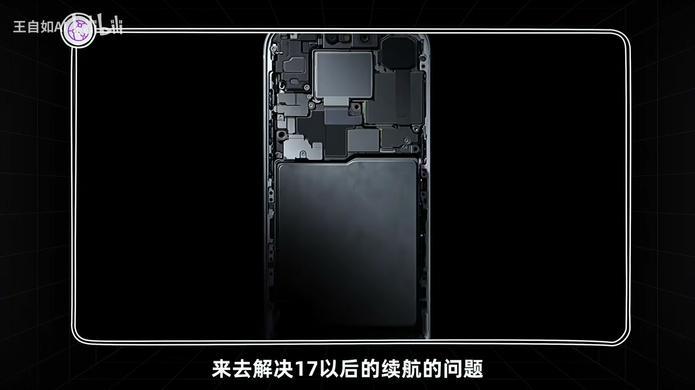
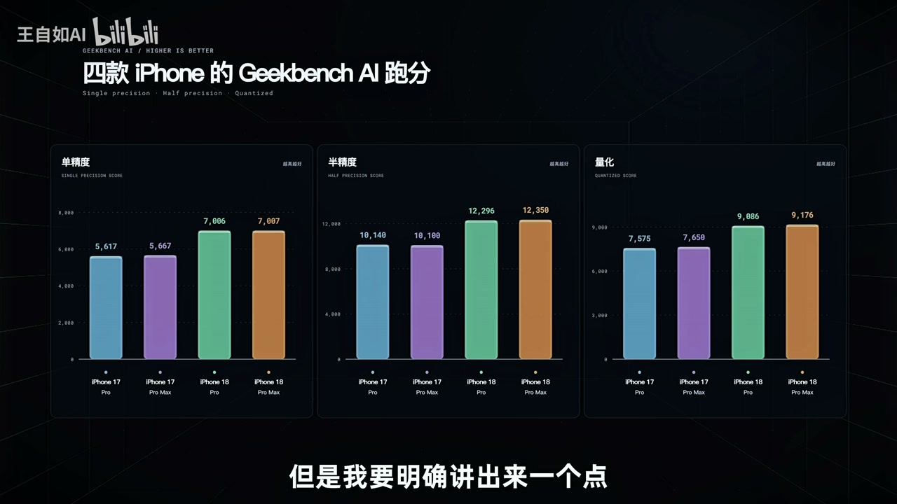
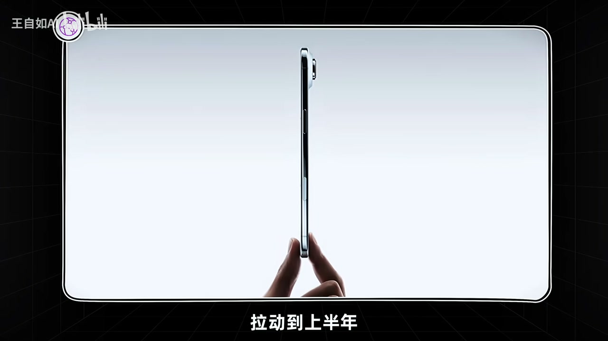
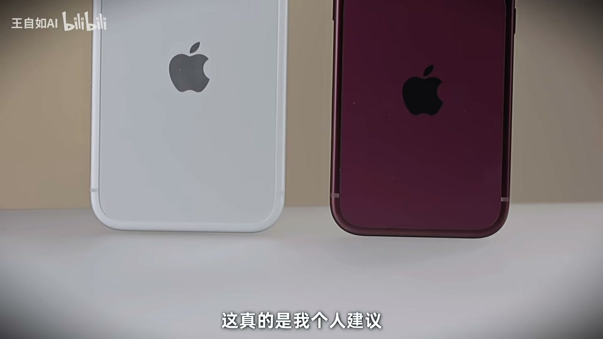

内容要点
王自如判断今年 Pro 是「小年」：ID 无大改、涨价、社交货币增益弱，核心建议是「最好别换」。产品侧拆续航/散热/通信的铝合金方案、内存带宽服务端侧 AI（国行价值有限）、可变光圈「高感知低频低价值」。后半转为商业驱动分析：标准版/Air 挪上半年造两波换机曲线、减少决策混淆、克制涨价吃内存红利、Duo 折叠指向中国市场——苹果把产品推到「买与不买阈值」刚好触达。
知识结构
别换；涨价+提升有限+ID 无社交增益。
续航/A20/内存为 AI；国行 AI 用不上则溢价不值；可变光圈感知高价值低。
两波换机曲线；减少系列间决策混淆；基准款可再打半年。
涨幅克制；折叠指向中国；非买不可→2TB 银色 Max。
今年 Pro 更像商业节奏机而非产品大年机；多数人别换，真要买就冲容量与低损耗配色，社交货币已更多在 Duo。
00:00-04:00小年定性：最好别换
开篇定义大年/小年：大年有 ID 重构与功能跃迁；小年是 ID 延续+性能相机软件小幅增量。今年 Pro 典型小年，建议最好别换——不只对上一代 Pro 用户，更早机型换机动力也不强：涨价、性能提升有限、延续 ID 无法换来社交谈资增值。
回顾 16→17：铝合金改善屏蔽/信号，凸台抬高腾电池舱解决续航，并改善散热；18 在此逻辑上几乎无变。材质工艺上铝合金成熟，但手感「冷峻致命感」不如钛+玻璃；同一 ID 延续三到四代是降本增效常态，靠主打色轮换撑话题。

04:00-08:00增益拆解：续航、内存 AI、可变光圈
续航：两纳米 A20 + 电池放大；实测口径「今年小版≈去年大版，今年大版再高一级」；游戏持续输出掉电改善。但要问：这一点点值不值得新溢价。
内存带宽/吞吐/延迟约 50%+ 提升，服务端侧推理与 AI 基础设施；99% 用户并非按 Pro 用法用机，国行原生 AI 用不了则价值接近为零。可变光圈回归光学控制、降计算摄影不确定性，但对多数人是高感知、低频、低价值——适合发布会讲，不适合驱动换机。评价三轴：高感知×高频×高价值，今年几乎占不满。

08:00-19:28商业驱动：两波曲线、克制涨价、Duo
发布会被读作商业驱动而非产品驱动：只发 Pro+折叠 Duo，标准版与 Air 传说明年年上半年——在总量持平/下滑市场人为制造第二波换机；同时避免全系列同季造成 Pro/标准/Air 决策混淆，服务「摇摆人群」转化（类比摇摆州/IP 中间层）。基准款与 Air 仍有信心再打半年。
内存涨价背景下苹果涨约 100–150 美金（约不到 10%），远小于安卓旗舰；因产能提前锁定，安卓更吃行情价。克制涨价既吃红利又留竞争空间并平滑未来供应链成本。Duo 折叠全球份额约 1%、中国约占半，指向中国市场。收束：经济环境下不建议换 Pro；非买不可→2TB 银色 Pro Max（情绪价值少损耗）；社交货币更多转移到 Duo。


完整转录（616段）
以下文本由 Whisper medium 模型自动转录，可能存在少量识别误差，已尽可能修正。
Hello兄弟们
今天给大家聊一聊今年关于iPhone 18的选择和购买的建议
今年整个的iPhone对于Pro线来说其实是一个小年
为什么说今年Pro系列是个小年呢
是因为往年对于iPhone的大年来说
通常会有ID的这个重大变化
可能会有功能上的重大重构
甚至是新功能的这些推出
但实际上今年都没有
那么小年的特征往往就是指ID延续不变
但是在性能上在相机上
或者说在一些软件上有一些增量的小幅度的升级
这可我们理解为就是小年
那么今年实际上对于Pro来说是个非常典型的小年
所以说咱们开篇点题
今年的18Pro到底该怎么选呢
我的建议就一句话
你最好不要换
而且这个建议不仅仅是针对去年拿着17Pro系列的朋友
对于你手上有更早的产品的人
其实我的建议一样
18的换机的需求和动力其实都不是那么的强
原因有很多的方面
第一个就是今年的价格涨
第二就是确实性能提升非常的有限
而且ID的延续并不能够让你付出了溢价了之后
在所谓的社交谈资上
在社交货币的增值上有任何的增益
这就是我今年的购买的建议
当然我背后肯定是有一套支撑的逻辑的
我们来展开讲一讲
第一个问题的话
就是我们从产品能力上面来去分析
今年18我刚才讲了
其实从ID上没有大的变化
去年17在换工业ID设计的时候
主要考虑的其实是几个维度
就是原来的老的iPhone 16 15
一直被诟病的续航
包括通讯
包括我们所说的散热等等这方面的能力
上来说确实被实际上吐槽很多
所以说16到17的主要的ID的更换
就是为了解决这三个问题
第一个叫做通信问题
第二个叫做散热问题
第三个就是续航的问题
那么为什么会有这样的差异
原因就是因为16的时候
它用的是钛合金和玻璃
其实钛合金作为中框
它的金属的屏蔽效应会更强
那么就会导致信号的普遍的接收不是很流畅
那么当它换了17的铝合金
包括18上面铝合金了之后
它的屏蔽效应会大幅的下降
会很大程度上改善这个问题
第二个就是说将上面的整个呆口变高了之后
将主板和运算的区域和相机的区域全部集中在这里
这样子可以大幅度的将下面的整块的区域
腾给电池来去解决17以后的这个续航的问题
从这个逻辑上来说到今天18这一代
其实没有任何的变化
那么从材质和工艺的完整性上来说
苹果去驾驭铝合金的熟练度和它的工艺成熟度
也远远好于整体切割的玻璃面板加钛合金中框
所以说如果你从材质和工艺上来说
17和18这两代跟之前的16相比起来
你甚至可以理解为是某种意义上的倒退
同时在质感上来说
我之前的分析的时候也讲过
16因为它用钛合金的中框加玻璃背板
钛合金本身的质感和硬度
加上玻璃这种高硬度的材质的特性
放在手里边的时候
你的这种金属的冷峻感
加上所谓的材料的致命感
会给你更加高级更加好的这种手感
而换成铝合金了之后
尤其是阳极氧化磨砂了之后
其实放在手里边的这种所谓的金属感和一体性
并没有那么强
所以从这某种角度来说的话
这更加证明就是说今年的18
在以苹果的尿性来讲
是同一个ID大概延续三到四代
甚至以上来达到降本增效的这么一个作用
没有任何的变化
所以作为小年
它更是通过提升一些颜色
和一些每年新换的轮换的主打色
来提升它的
比如当年的这种时尚性和所谓的这种话题度
第二个问题的话
今年的整个的续航上面的改善
通过我们的两纳米的A20 Pro系列的芯片
进一步得到了增强
第二个就是说通过电池容量的放大
续航的水平有了一个大幅的提升
但是通过我们的实测下来来看的话
其实也还好
大家只要记住一句话
就是今年的小版几乎等于去年的大版的续航
那么今年的大版
可能比去年的大版就要更高上一级了
然后再有一个就是
能明显的看得到在游戏环节这个部分
因为它可能需要持续的性能输出
这个iPhone的发布会里面也讲到了
就是持续性能输出
今年的A20会比去年的A19效果更好
能明显的看得到在掉电的情况下来说
确实新一代的产品
在工业制程的价值之下
有了一定的提升
但是我的逻辑就是
这一点点的提升值不值得你付出新的一价
这个其实非常关键
然后第二个非常关键的一点的提升
其实是在内存层面上
发布会的时候我也就提到过这个点评
就是说今年iPhone除了芯片的处理能力以外
内存的带宽
内存的吞吐性能
内存的延迟
这方面的性能有了非常显的提升
通过我们的测试至少50%的提升
OK 这有没有价值呢
有价值
你在打开App或者是做一些高内存吞吐的这些
读取的或者说读写的过程当中
今年的18 Pro系列可能会比去年要好一些
但是我要明确讲出来一个点
就是说即便你买的是Pro系列
但是99%的用户真没有按照Pro的方法去用
所以说这个提升并不是针对大家日常使用的时候
有那么明显的显度的变化
而是为了今天日益普及的AI基础设施和端侧模型的能力
来去做的前置性的部署
也就是说它为了增强端侧推理能力
增强AI的响应速度
因为AI大家知道在推理的过程当中
其实是内存的吞吐的带宽最为重要
所以你看因为拿到整个的训练的架构
为什么它的GPU就会比国产的这个算力架构要更贵
其实主要的原因还是因为它高性能的这种
内存的吞吐对于你的模型训练会有效率的提升
并且对于推理的性能也会有所提升
所以这些东西其实是为了AI来做的
那么这就更加call back的一个非常重要的点
对于我们的国航用户来说
苹果原生AI你根本用不到的情况之下
这个提升对于你来讲几乎毫无益
那么你是不是要为了每一天打开App快那么一点点
然后录一个超大的视频导出和写入的时候
快那么一点点而付出一个新的溢价呢
这也是非常重要的一个因素
然后最后一个就是可变光圈
可变光圈这件事说实话
我觉得今天之前我也讲过了
就是说你可以从产品理念上来理解为
苹果在回归它的这种忠实还原和忠信的这一种性格特征
尽可能的规避计算摄影带来的所谓的算法的浮动
和结果的不可预测性
用通过真实的光圈来去体现它的整个的成像的素质
但是还是那句话
今天的这个如果我们99%的人不是把Pro的产品
按照Pro的用法去用
对吧
那这个价值对于你来说我认为也非常有限
至少在我看来的话我用Air
我用Air拍照我都没有任何抱怨的人
对吧
这个可变光圈我觉得在技术先进性上
在工艺上
在工程上确实很厉害
但是在消费价值上来说的话我认为不大
这种叫做什么呢
这种叫做高感知度
但是低频且低价值
OK
对于普通用户来说
所以高感知度的功能一般放在哪里合适
放在发布会上去讲
很合适
对吧
然后高频的东西是什么
比如玩游戏就叫高频
对吧
然后高价值的东西
就是我讲的
如果它内存如果真的性能提升了
但是你又能用AI
那就叫做高频高价值
但如果说你用不了这个AI
它就是个低价值的事
能理解我的意思吧
所以我衡量产品的模型非常简单
就做高感知度
高频加高价值
这三个东西
所以说刚才iPhone18系列
Pro系列
今年讲了这么多
能够将这三个维度都占满的
其实几乎没有
然后第二个就是说
如果让我来总结
今年的整个的苹果系列的发布会
就9月份的这个iPhone的发布会
我会觉得
它是一个典型的商业驱动的
这样的一个产品发布节奏
而并非是一个
传统意义上产品驱动的商业节奏
这里边有什么区别呢
我刚才讲到的
如果是个大年
那么就是典型的产品驱动
我们可能要想产品的创新性在哪里
技术的领先性在哪里
那么商业驱动的逻辑是什么呢
那就是说产品上的增益
或者是说改善
罚善可成
但是更多的布局
其实体验在商业思考上
这里边有非常非常多细节维度
我也给大家拆解一下
这可能是你来看我这个视频
和别的视频不太一样的地方
首先我讲的第一个逻辑
就是说商业驱动里面
最典型的一个特征就是
今年只发了Pro线和Dual折叠屏
但是没有发标准版
加没有发Air
那么据传产业链当中的这个消息
应该是标准版和Air
会放在明年上半年来举发
那为什么说这是一个标准的商业驱动呢
那就是因为今天整个智能手机的消费
和出货量总体是在持平
甚至是逐渐下降的
这样一个充分竞争的市场
OK
市场的节奏和竞争压力会更大
那么为了增加和人为的拉动第二潮
第二波的换机曲线
OK
将某些产品移到传统意义上
iPhone缺席的上半年
对于拉动iPhone的全年总体销量
会更加的有价值
OK
我们想象一下原来传统上半年
iPhone会发布哪些产品
发布过的我能想到的
什么SE系列
5C
那都是多少年以前的产品了
甚至
还要一些年会发红色的这种
所谓的
这个叫做特别的慈善版本
就他们买一台之后
会有一些捐款的
那么这些产品很明显
对于上半年
苹果iPhone的销量的拉动
应该说力量是非常非常之弱的
OK
但是如果说能够将标准版的iPhone
那样就知道标准版iPhone
是iPhone所有产品组合当中
出货总量最大的产品
如果能够将它移到上半年
再加上一个特征非常鲜明
到今天在行业当中
极具领先优势的Air产品
拉动到上半年
它就能够很好的
让这两部分产品的受众群体
OK
集中的在上半年进行换机的动作
那么下半年以Pro线和折叠屏为主
上半年以它的这个标准款
加Air为主
形成人为拉动的两波换机曲线
然后那么第二个商业维度
非常关键的一个点
那就是说
如果你将Air
折叠屏Pro线和标准款
都集中在下半年的话
那么一定会形成
这个消费者决策当中的时候的
一些叫做需求的混淆
OK
也就是说
可能买Pro的人会纠结
我要不要省点钱买机正款
买机正款的人会纠结
我要不要加点钱上Pro
或者说Air和Pro怎么选
就是去年我们讨论
17这个系列的时候
遇到的很多很多的话题
OK
那么从某种意义上来讲
这种消费者需求的混淆
决策因素增多
其实某种意义上来说
会稀释掉
某每一款产品系列当中的
总体销量
OK
大家会来回摇摆不清晰
也就是说
通过人为的拉伸
这种所谓的分流
上半年一波
下半年一波
让消费者决策的变量变少
某种意义来说
推动那些在灰度决策过程当中
最重要的消费群体
来去推动他们换机
这一点在商业决策上
其实非常重要
大家都知道
比如说像魔兽电影
大家见过吧
这种强IP强用户的人
你知道这种商业运作的逻辑当中
最核心的是什么吗
不是你去把魔兽的死忠粉
或者暴雪的死忠粉拉过来
去买这样
去看他们的电影
买他们的游戏
这些人
无论你怎么宣传
电影做得好不好
他都会去电影院
支持你一张门票的
而还有一群人
是对于魔兽压根不感冒的
根本对这个世界
一点感情都没有的人
但你怎么做宣传
他都不会去
那么这种IP的商业成功
他能卖10个亿
还是能卖100亿
中间最大的灰度
其实来自于叫做中间的摇摆人群
就像美国大选
为什么去争取摇摆州
逻辑是一样的
摇摆人群决定商业走向
所以其实人为的拉动两波的
这种所谓的销售曲线
和决策曲线
更大的价值就在于说什么呢
去更好地去分离摇摆人群
让他的决策需求变得更聚焦
消费的转化变得更直接
也就是说
这是一个非常明确的
商业驱动的这样的一个逻辑
然后第三个非常重要的维度
那就是苹果在去年的
iPhone的时期的基准款
其实上了之后
无论是从SOC的能力上
包括产品的配置
包括屏幕
包括高刷屏上了之后
其实产品历上来讲
加上苹果的这个品牌号召力
它的品牌溢价
它还能够延续半年的
销售生命周期
其实是没有问题的
苹果也敏锐的捕捉到了这一点
第三点就突出了
苹果在商业上
非常非常综合全面的一种精明感
这种精明感
从乔布斯时代就已经的遗传下来了
到今天苹果也良好的继承了
也就是说
它衡量它的产品
能不能在市场上继续打
不是像我们普通消费者
或者某些安卓厂商一样
去给你比参数
比配置比指标
它的逻辑永远是
参数指标垂直整合
软硬件加品牌综合维度
来判断它有没有信心
让这个产品再打半年
再打三个月
再打五个月
如果它的结论是
我可以再打三个三五个月
它一定赶下这个决策
把这个产品的周期变延迟
那么包括Air产品也是一样的
从去年发出来
现在整整一年了
那这个产品在市场上还领先
依旧允许它有这个空间
再打半年
对吧
所以说从这个情况之下
也给它营造了一个良好的空间
和一个前提条件
让它允许强行拉升
叫做两波所谓的换机曲线
这样一种商业策略
第四个问题
今年的商业驱动的特征非常明显
那就是你会发现
苹果在内存涨价的
总体的大趋势背景之下
它也选择了涨价
但是它涨价的幅度
平均下来只有100到150美金
从iPhone的总体售价上来说
OK
大概应该是不到10%的
这样一个涨幅
因为全球的各个区域的
这个销售价格不太一样
但是如果你看
今年安卓厂商的旗舰机
在因为内存涨价驱动上
它的涨价幅度基本到2000以上
那么可能会占到
整机售价比例会远高于iPhone
可能远超于15% 20%这样的水平
OK
那么这是为什么
刚才我之前我讲过
就是说
其实今年内存涨价这件事
对于苹果的供应量压力
远不如安卓的供应量压力来大
原因是因为苹果今天
在手机上拥有的这种高型的内存
其实是几年以前
就提前锁定了产能
锁定了价格的
也就是说
这个内存涨价的价格波动
对于苹果的影响是非常非常知晓的
安卓手机厂商不一样
他每一年提前一年左右去迭代
然后到了这个产品要量产的时候
才去下料
才去备货
那么这个时候
其实你是行情价
也就是说你在饭店里边吃鱼的时候
吃的是实价
而不是所谓的固定价
所以说安卓厂商的涨价的压力
和成本的压力会远大于iPhone
那么也就是说
如果iPhone它不涨价的话
它基本上就可以让它的产品
和安卓的旗舰机同等竞争
那你再加上苹果的生态价值
和它的品牌溢价
那安卓厂商几乎没得打
但是你会发现苹果很聪明的
依旧选择了将这一波涨价红利吃到嘴里
但是它吃的幅度非常克制
非常有限
大概在100美金上下
也就是说它要应对的是
未来当它的供应链
也需要在下一个周期涨价的时候
它能够通过今天的利润成本
把它抹平掉
一部分抹平
第二个维度也很重要
那就是说
它其实是将产品配置供应链成本
加它的品牌溢价综合
来去跟其他人做竞争策略的
所以它要涨价
但是它涨得又非常的克制
这也就是说
是一个非常典型的商业驱动的
这么一个逻辑
最后一点
我也觉得非常关键
就是今年iPhone Duo产品的推出
全年这么多的手机的总体的出货量
折叠平在全球的总出货量
大概占1%左右
那么在这1%当中
又有50%
其实是中国市场出的
也就是说
其实Duo这款产品
从定义到销售的目标市场来说
对于中国市场的指向性
其实还是非常之明显的
还是非常之明显
那么加上苹果的
这个所谓的品牌的带动力
它能不能在这样的一个产品新形态之下
去拉动它全球的总体的折叠平的销量
我认为都未可知
所以这也是一个非常典型的
经过商业策略的
这种权衡和评估了之后
来去重新调整它整个产品线的布局
达到了几个综合的效果
第一
让它的产品线足够丰富
让上半年有两款机型
下半年有两款机型
第二个就是既持产业内的红利
但是要不要吃的过分
能够维持它的整个的商业竞争的优势
但同时又能够平衡它未来
整个供应链涨价未来的风险
然后第三个就是说通过这种调整
让消费者的决策因素变得聚焦
来去促进每一个细分产品线
都能够有更高的转化率
从而拉动它全新的销售
这个事情我看完了之后
其实我最近这段时间
一直在分析苹果的这样的一个商业策略
我真的觉得是非常厉害
非常了不起
他永远非常清楚的知道
在消费者心目当中苹果到底意味着什么
然后在消费者心里边那个买与不买的预值当中
精准的把产品软件硬件设计功能给你堆到
刚刚好触达那个预值
多一分都不给你 对吧
少一分他也不干
OK 才能达到一个所谓的商业上的均衡
所以苹果的成功一方面是
乔布斯当年的软硬件结合策略的成功
IOS的成功还有一部分相当非常重要的
以至于很多人去容易忽略的部分
其实是苹果商业策略上的精明与成功
这个部分也来自于乔布斯
他从苹果离职了之后创办了Nex
在重新回归之后
将这一整套的商业逻辑
让他成长为了一个更成熟的商人
这个里边很多的传闻和意识
我现在就不给大家展开讲了
他总体来说
在各种因素的加持之下
今年下半年的iPhone Pro现在作为一个小年
我觉得并没有给我足够强的这种换季的诉求
从现实的经济环境的考虑
大家现在钱这么难赚的情况下
对吧
我也不建议大家换今年的Pro系列
如果你真的觉得你自己是又有钱又自信
对吧
我给你的建议是什么
你说我非要买18
那我给你的建议就是
你又有钱又自信
上两T版本的银色Pro Max
能理解我的意思吗
这真的是我个人建议
如果你选择银色
几乎没有任何的所谓的情绪价值的损耗
虽然没有增益
不像这种酒红色有增益
对吧
但是也没有损耗
所以我还是强调社交货币的价值还是存在的
只不过现在更多的转移到了Duo身上
说我这说实话
有什么社交货币的价值
无非就是求这个颜色
这个颜色你觉得
那么说我要用这个的话
我就觉得我进一步的老灯了
老灯化了
对不对
如果是个女生
我觉得年轻女生也不适合这个颜色
对吧
所以我就觉得今年的这几个产品
让我觉得非常奇怪
好吧
今天我希望我这视频能给大家贡献一些不一样的角度
能够帮助大家做更多的决策
那么我今年最感谢的产品就是Duo
对吧
因为我现在已经不再是顶流
所以说还没手机
等我有手机了的时候
我再按照我的角度
我的思路和我的视角
来给你们带来一个属于王自如自己的解读
OK
我们下次再见
拜拜
Peace